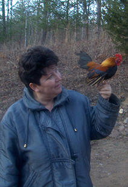
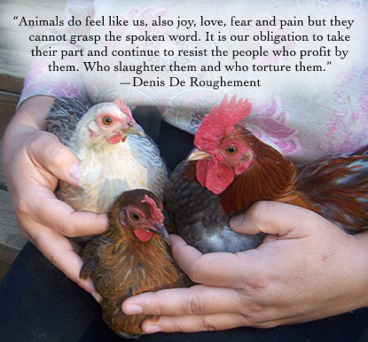

My Story

Hello, my name is Annamaria and I am a vegan empty nester.
I moved to North Carolina in June 2009. The amazing beauty of the mountains captured my heart and soul and North Carolina become my home.
I started my rescue that summer by taking in chickens from bad situations, being held in tiny cages with no place to spread their wings, sometimes without food or water. Flea markets, auctions and local farmers were the places I found unwanted chickens.
In 2013, I decided to expand my rescue to the next level and go public. Becoming a non-profit 501(c)(3) organization is in progress.
